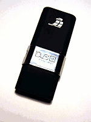
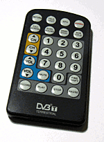

Digittrade DVB-T USB Stick
Dieser Artikel wurde für die folgenden Ubuntu-Versionen getestet:
Ubuntu 16.04 Xenial Xerus
Ubuntu 14.04 Trusty Tahr
Zum Verständnis dieses Artikels sind folgende Seiten hilfreich:

Der Digittrade DVB-T USB Stick  ist eine 2007 auf den Markt gekommene DVB-T-Karte, die vom Hersteller auch mit Linux-Tauglichkeit beworben wird. Der Packung liegt eine CD u.a. mit Linux-Treibern bei; außerdem eine kleine Stabantenne, sowie eine Fernbedienung (die laut Hersteller unter Linux nicht unterstützt wird, siehe aber hier). Der Stick benötigt unter Linux einen USB-2.0-Port sowie eine CPU mit mindestens 800 Mhz/1 GHz. Die Karte verwendet einen Afatech-AF9015-Chip
ist eine 2007 auf den Markt gekommene DVB-T-Karte, die vom Hersteller auch mit Linux-Tauglichkeit beworben wird. Der Packung liegt eine CD u.a. mit Linux-Treibern bei; außerdem eine kleine Stabantenne, sowie eine Fernbedienung (die laut Hersteller unter Linux nicht unterstützt wird, siehe aber hier). Der Stick benötigt unter Linux einen USB-2.0-Port sowie eine CPU mit mindestens 800 Mhz/1 GHz. Die Karte verwendet einen Afatech-AF9015-Chip  und benötigt die entsprechende Firmware.
und benötigt die entsprechende Firmware.
Installation¶
Die auf der CD befindliche Software ist für die aktuellen Ubuntu-Versionen nicht kompatibel. Die Karte selbst sollte ohne weitere Vorarbeiten direkt funktionieren, da die im Kernel befindliche dvb-v4l-Version alle erforderlichen Module enthält; ggf. muss die aktuelle Firmware-Datei dvb-usb-af9015.fw  mit Root-Rechten[1] nach /lib/firmware/ kopiert werden. Alternativ kann die Firmware über das Paket
mit Root-Rechten[1] nach /lib/firmware/ kopiert werden. Alternativ kann die Firmware über das Paket
linux-firmware-nonfree
 mit apturl
mit apturl
Paketliste zum Kopieren:
sudo apt-get install linux-firmware-nonfree
sudo aptitude install linux-firmware-nonfree
installiert[2] werden, siehe auch restricted-manager; unter Ubuntu 16.04 ist das Paket allerdings nicht mehr vorhanden.
Benutzung¶
Die Karte kann mit jeder DVB-T-tauglichen Software verwendet werden (siehe TV; der Hersteller empfiehlt Kaffeine).
Fernbedienung¶

Um die Fernbedienung in Betrieb nehmen zu können, sind Vorarbeiten nötig. Zunächst muss in einem Editor[3] eine Konfigurations-Dateien erstellt und mit Root-Rechten in /etc/modprobe.d/ abgespeichert werden.
Die Datei /etc/modprobe.d/dvb-usb-af9015.conf sorgt dafür, dass der Infrarot-Empfänger im Stick als eigenes Input-Device automatisch erkannt wird (nötig, da mindestens vier verschiedene Sticks mit gleicher Kennung existieren; der IR-Receiver wird zwar sofort erkannt, lässt sich aber nicht ohne Weiteres ansprechen). Inhalt ist die Zeile
options dvb-usb-af9015 remote=4
Der Infrarot-Empfänger wird daraufhin (spätestens nach einem Neustart des Rechners) mit
cat /proc/bus/input/devices
als Input-Device angezeigt, und in der dmesg-Ausgabe findet sich dann ein Eintrag wie
[ 13.142363] input: Afatech AF9015 reference design as /devices/pci0000:00/0000:00:14.0/usb3/3-11/rc/rc0/input20 [ 13.142458] rc0: Afatech AF9015 reference design as /devices/pci0000:00/0000:00:14.0/usb3/3-11/rc/rc0
Daraufhin erkennt das System einige der Tasten so (Ziffern, Lautstärkeregelung über VOL↑/VOL↓/MUTE-Tasten, die Play/Timeshift-Tasten funktionieren z.B. in Rhythmbox zum Starten/Anhalten des ausgewählten Titels). Eine weitergehende Konfiguration erfolgt dann wie in Lirc und Lirc/Tasten mit Funktionen belegen beschrieben, es kann auch inputlirc verwendet werden.
lircd.conf¶
Falls die Tasten von einer Standard-Lirc-Installation mit Linux Input Layer (dev/input/eventX) und entsprechend automatisch erstellter lircd.conf nicht erkannt werden, hier noch eine eigene lircd.conf für die Fernbedienung:
# Please make this file available to others
# by sending it to <lirc@bartelmus.de>
#
# this config file was automatically generated
# using lirc-0.8.6(devinput) on Mon Dec 7 23:13:56 2009
#
# contributed by Heinrich Schwietering
#
# brand: DIGITTRADE
# model no. of remote control:
# devices being controlled by this remote: Digittrade USB DVB-T
#
begin remote
name Digittrade_USB_DVB-T_Remote
bits 16
eps 30
aeps 100
one 0 0
zero 0 0
pre_data_bits 16
pre_data 0x8001
gap 455981
toggle_bit_mask 0x0
begin codes
KEY_PREVIOUS 0x0195
KEY_TEXT 0x0184
KEY_EPG 0x016D
KEY_POWER 0x0074
KEY_SCREEN 0x0174
KEY_SOUND 0x0188
KEY_S 0x00D2
KEY_SUBTITLE 0x0172
KEY_CHANNELUP 0x0192
KEY_CHANNELDOWN 0x0193
KEY_VOLUMEUP 0x0073
KEY_VOLUMEDOWN 0x0072
KEY_MUTE 0x0071
KEY_1 0x0002
KEY_2 0x0003
KEY_3 0x0004
KEY_4 0x0005
KEY_5 0x0006
KEY_6 0x0007
KEY_7 0x0008
KEY_8 0x0009
KEY_9 0x000A
KEY_0 0x000B
KEY_TIME 0x00A4
KEY_RECORD 0x00A7
KEY_PLAY 0x00CF
KEY_STOP 0x0080
KEY_PAUSE 0x0077
end codes
end remoteProbleme¶
Falls beim Hochfahren des Rechners eine sich ständig wiederholende Fehlermeldung in der Art
[ 5106.864369] af9015: command failed:255 [ 5106.864375] dvb-usb: error while querying for an remote control event.
erscheint und die Fernbedienung nicht funktioniert, hilft es ggf. (nach Überprüfung, ob die USB-Verbindung auch nicht locker ist), statt der oben verlinkten Firmware diese Version dvb-usb-af9015.fw zu verwenden, und nach /lib/firmware (Root-Rechte nötig!) zu kopieren.
Falls auch das nichts ändert (ggf. bei einem 64-bit-System), kann in /etc/modprobe.d/ die Datei dvb_usb_af9015.conf mit dem Inhalt
options dvb_usb_af9015 remote=10
angelegt werden (Editor mit Root-Rechten), die Meldung sollte daraufhin unterbleiben. Allerdings kann dann die Fernbedienung nicht mehr verwendet werden!
Links¶
Forums-Thread zur Fernbedienung der Karte
Anleitung
für die MSI Digivox mini II V3 Karte, die den gleichen Chipsatz verwendetThread
auf linuxtv.org zur Fernbedienung
- Erstellt mit Inyoka
-
 2004 – 2017 ubuntuusers.de • Einige Rechte vorbehalten
2004 – 2017 ubuntuusers.de • Einige Rechte vorbehalten
Lizenz • Kontakt • Datenschutz • Impressum • Serverstatus -
Serverhousing gespendet von